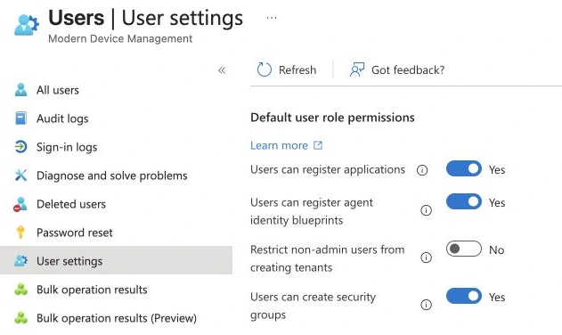
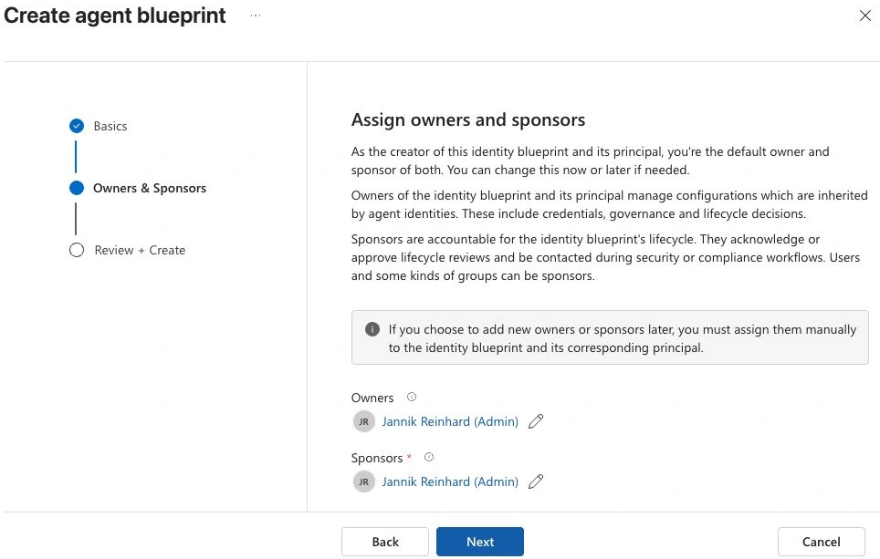

Entra Agent Blueprints: Who Can Create Agents in Your Tenant?
I opened Entra ID > Users > User settings to answer a question that comes up as soon as the first team starts building agents: does the developer who can register an app also get to create an agent blueprint? In my Modern Device Management tenant, both switches were on. They are two different settings.
Iâll walk through the one for blueprints, then follow it to the directory objects and owners you need for an audit. I rechecked the setting on 13 November. I didnât change it or create a new blueprint.
Read the setting before changing it
Open Entra ID > Users > User settings and find Users can register agent identity blueprints. Microsoft documents this control separately from application registration and user consent. When creation is allowed, ordinary users can create a blueprint and its associated principal. When it is restricted, the documented Agent ID roles become relevant. Role delegation controls


Before selecting No, inventory the existing developers and deployment paths. A restriction without a supported request process tends to replace visible development with shared credentials or untracked application registrations. My preferred outcome is an approved builder group, named responsibilities and a reproducible deployment path.
Conversely, leaving Yes does not mean every user should receive every downstream permission. Review access approval independently instead of treating one switch as the entire governance design.
Know which object and responsibility you are reviewing
A blueprint describes an agent identity family. Its associated principal exists in the tenant; child agent identities are another level. The portal may create related objects during a wizard, so record the actual resulting IDs rather than assuming one visible agent equals one directory object. Blueprint creation and ownership
The creator becomes an owner, and blueprint owners can create child agent identities without an additional Agent ID role. Sponsors carry business accountability; ownership is the operational ability to manage configuration. Giving someone ownership is therefore more consequential than adding their name to an inventory sheet. Blueprint responsibilities


The wizard prepopulates the signed-in account as owner and sponsor. I cancelled this example; no blueprint or agent identity was created.
I would keep an inventory row with blueprint ID, child identity IDs, owner, sponsor, application purpose, environment and retirement contact. Add the deployment repository and the person allowed to approve a production change. Those last fields turn an identity list into something an operations team can use.
For the concrete registration flow, my Agent 365 Python and Entra walkthrough shows the implementation separately from this tenant-wide creation-policy review.
Separate the three decisions

Review creation, management and resource access separately. None of these checks substitutes for the other two.
For a helpdesk agent, I would ask the builder team to create the identity through the approved path. A named service team operates it. The owner of the ticket system approves only the necessary ticket permissions. Production access is reviewed against the actual principal that will request a token.
There are several ways this can go wrong even with a restricted creation switch: an existing owner creates more identities, an old application grant remains broad, or the application uses a separate credential outside the identity being reviewed. The control needs an inventory and an access review around it.
Also separate who may invoke an agent from who may administer it. Entra documents user-access controls such as required assignment, but those are not an approval for every resource the agent can reach. Control user access to agents
For the inventory, I separate the application object ID, the application (client) ID and the object ID of the blueprintâs service principal. Start at Entra ID > Agents > Agent blueprints. Copy the application ID and object ID from the same row. The applicationâs object ID is the one you need for the Graph owner relationship below. An app/client ID is useful for correlation, but it isnât an interchangeable Graph path parameter.
Think through a developer handover before you restrict creation. If the original developer leaves, can the service team still manage the blueprint? Can the deployment identity still create its intended child identity? Does the ticket API still have a separate, narrowly scoped permission grant? A successful answer to any one of those questions tells you nothing about the other two.
Inventory blueprints through Microsoft Graph
The v1.0 list endpoint is /applications/microsoft.graph.agentIdentityBlueprint. Microsoft lists AgentIdentityBlueprint.Read.All as the least-privileged read permission for that operation. Delegated tenant-wide visibility also depends on the callerâs role; an empty result from an insufficiently privileged account is not an estate-wide audit. Graph list API and permission table
In an already approved Microsoft Graph PowerShell session, this read-only example follows pagination:
$uri = 'https://graph.microsoft.com/v1.0/applications/microsoft.graph.agentIdentityBlueprint?$select=id,appId,displayName&$top=100'
$blueprints = @()
do {
$page = Invoke-MgGraphRequest -Method GET -Uri $uri
$blueprints += @($page.value)
$uri = $page.'@odata.nextLink'
} while ($uri)
$blueprints | Select-Object id, appId, displayNameDo not paste an access token into the script or its output. Use your organizationâs approved authentication path and scope before running it. This articleâs code was syntax-checked locally; I did not run a new consent flow or tenant-wide Graph export for this draft.
For each blueprint, read its owners with the documented /applications/{id}/microsoft.graph.agentIdentityBlueprint/owners relationship. Follow pagination there too. Keep the application object id distinct from appId; substituting one for the other makes an audit surprisingly misleading. Owner relationship API
Test the policy with two ordinary workflows
Use a non-privileged test account and an approved builder account. Record their effective roles and blueprint ownership before testing.
- Start with a user who has no Agent ID role. Try the same creation entry point that your builders use and capture the actual outcome. The UI can be present even if the request is denied.
- Repeat with the approved builder. Use the account or pipeline that will deploy in production. A result from Global Administrator is a poor control case.
- Check an existing blueprint owner separately. Creating a child identity under a blueprint the person already owns is a different operation. Before the test, record the parent object and approved child name.
- Inspect the resource grant. After registration, try to read one approved resource and one outside scope. The useful evidence is the backend response for the exact principal, not a screenshot of a successful registration.
Do not make the test account an administrator to get past a failed test. That changes the question you are measuring. Keep test objects and permissions bounded and remove them through the normal lifecycle after the test.
Decide what to do with the result
If creation is too open, define the builder process before restricting it. If ownership is unclear, fix ownership before distributing more permissions. If an agent already has excessive access, review its resource grants directly; changing the creation policy does not remove existing access.
Finally, disabling an identity is not proof that every previously issued token and every downstream session has stopped. Microsoft distinguishes token issuance and other controls in its agent security guidance. Zero Trust for agents
The immediate action is small: read the switch, export a correctly scoped inventory and identify who can approve creation and resource access. That gives you a defensible starting point without blocking the people who are building useful agents.